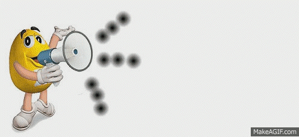

La célula animal
La célula animal

Nota. Gráfica tomada de: https://es.pinterest.com/pin/583849539179989895/
Las células animales son las que forman los distintos tejidos de los organismos vivos que pertenecen al reino Animalia (animales). Asimismo, la célula animal es un tipo de célula eucariota, es decir, que tiene un núcleo definido. Ya que los animales son seres pluricelulares complejos, sus células poseen un altísimo nivel de especialización: dependiendo del tejido al que pertenecen, cumplen funciones puntuales que definen su morfología, su función y sus necesidades.

Nota. Gráfica tomada de: https://makeagif.com/gif/aviso-importante-6KuZJE
Durante el desarrollo de este recurso encontrarás diferentes enlaces, botones e hipervínculos que te llevarán a videos, juegos, lecturas y actividades complementarias. Te recomendamos explorarlos cuidadosamente, ya que han sido seleccionados para ampliar la información, reforzar los conceptos trabajados y facilitar una mejor comprensión del tema.
Recuerda que cada recurso adicional constituye una oportunidad para fortalecer tus conocimientos, desarrollar nuevas habilidades y aprender de una manera más dinámica e interactiva. ¡No olvides visitar cada enlace y aprovechar al máximo esta experiencia de aprendizaje!
Por eso te dejaré el siguiente enlace y video.